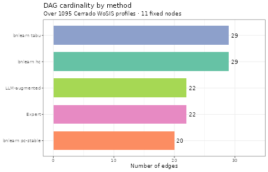
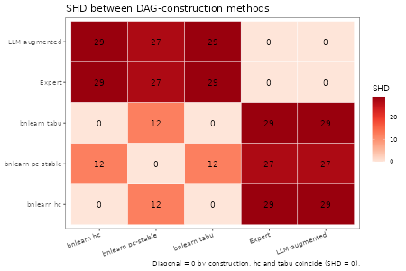
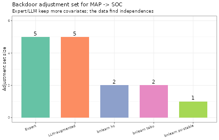

Causal discovery in the Cerrado: expert vs. LLM vs. data-driven
A complementary trio for building the pedogenetic DAG
Hugo Rodrigues
Source:vignettes/causal-discovery-trio.Rmd
causal-discovery-trio.RmdCentral question. Can three different ways of building a pedogenetic DAG – expert knowledge, LLM extraction from the literature, and learning directly from data – agree on the same 1,095 WoSIS profiles from the Cerrado? If not, what is the scientific glue between them?
res_path <- system.file("extdata", "causal_discovery_results.rds",
package = "edaphos")
stopifnot(nzchar(res_path), file.exists(res_path))
R <- readRDS(res_path)Motivation
Pillar 1 of edaphos offers three routes
to the same object – a causal DAG – yet the pedometric literature almost
always uses only one of them. Zhang and Wadoux
(2026) point out that
“the specification of an explicit causal model” is the
first of three conditions for causal inference in DSM; how that
specification is made, however, has been treated as a detail. This
vignette shows that:
- The three strategies produce very different DAGs for the same set of covariates.
- The differences translate into radically different backdoor adjustment sets, and therefore into different identified causal effects.
- They are complementary, not interchangeable – the honest route is to use all three and report the sensitivity.
The three methods
methods_df <- data.frame(
method = c("A) Expert",
"B) LLM-augmented (Gemma 4)",
"C1) bnlearn hc",
"C2) bnlearn tabu",
"C3) bnlearn pc-stable"),
source = c("Published pedological knowledge",
"Automatic extraction + expert base",
"Hill-climbing on BIC-g",
"Tabu search on BIC-g",
"PC-stable with alpha = 0.05"),
uses_data = c("No",
"No (literature KG)",
"Yes (1,095 WoSIS profiles)",
"Yes (1,095 WoSIS profiles)",
"Yes (1,095 WoSIS profiles)"),
uses_priors = c("Implicit (expert)",
"Expert + confidence >= 0.70",
"Pedological whitelist + blacklist",
"Pedological whitelist + blacklist",
"Pedological whitelist + blacklist"),
stringsAsFactors = FALSE
)
knitr::kable(
methods_df,
col.names = c("Method", "Structural source",
"Uses observational data?", "Uses pedological priors?"),
caption = "The five DAG-construction methods compared in this vignette."
)| Method | Structural source | Uses observational data? | Uses pedological priors? |
|---|---|---|---|
| A) Expert | Published pedological knowledge | No | Implicit (expert) |
| B) LLM-augmented (Gemma 4) | Automatic extraction + expert base | No (literature KG) | Expert + confidence >= 0.70 |
| C1) bnlearn hc | Hill-climbing on BIC-g | Yes (1,095 WoSIS profiles) | Pedological whitelist + blacklist |
| C2) bnlearn tabu | Tabu search on BIC-g | Yes (1,095 WoSIS profiles) | Pedological whitelist + blacklist |
| C3) bnlearn pc-stable | PC-stable with alpha = 0.05 | Yes (1,095 WoSIS profiles) | Pedological whitelist + blacklist |
Pedological priors (applied to every data-driven method)
knitr::kable(
R$whitelist,
col.names = c("From", "To"),
caption = paste0(
"**Whitelist** -- physically indisputable orientations imposed ",
"on the discovery algorithms. Climate and topography precede soil; ",
"elevation precedes slope."
)
)| From | To |
|---|---|
| elev | slope |
| elev | wc_bio_12 |
| wc_bio_12 | soc_topsoil_gkg |
| wc_bio_01 | soc_topsoil_gkg |
knitr::kable(
R$blacklist,
col.names = c("From", "To"),
caption = paste0(
"**Blacklist** -- forbidden reversals. SOC does not cause precipitation ",
"or temperature; vegetation does not cause climate; slope does not ",
"cause elevation."
)
)| From | To |
|---|---|
| soc_topsoil_gkg | wc_bio_12 |
| soc_topsoil_gkg | wc_bio_01 |
| wc_landcover_trees | wc_bio_12 |
| slope | elev |
How many edges did each method produce?
counts <- data.frame(
method = c(
"Expert",
"LLM-augmented",
"bnlearn hc",
"bnlearn tabu",
"bnlearn pc-stable"
),
n_edges = c(
nrow(R$edges_expert),
nrow(R$edges_llm_aug),
nrow(R$edges_bnlearn[["hc"]]),
nrow(R$edges_bnlearn[["tabu"]]),
nrow(R$edges_bnlearn[["pc-stable"]])
),
stringsAsFactors = FALSE
)
ggplot(counts, aes(x = reorder(method, n_edges), y = n_edges,
fill = method)) +
geom_col(show.legend = FALSE, width = 0.72) +
geom_text(aes(label = n_edges), hjust = -0.3, size = 4) +
coord_flip() +
scale_fill_brewer(palette = "Set2") +
labs(
x = NULL,
y = "Number of edges",
title = "DAG cardinality by method",
subtitle = sprintf("Over %d Cerrado WoSIS profiles · 11 fixed nodes",
R$n_profiles_used)
) +
ylim(0, max(counts$n_edges) * 1.15)
Structural Hamming Distance matrix
The Structural Hamming Distance (SHD) counts the
minimum number of edge additions, deletions and reversals needed to turn
one DAG into another (Tsamardinos et al. 2006).
SHD(A, A) = 0 (a DAG is identical to itself);
SHD(A, B) = n means B differs from A by n operations.
shd <- R$shd_matrix
shd_df <- expand.grid(
method_i = rownames(shd),
method_j = colnames(shd),
stringsAsFactors = FALSE
)
shd_df$SHD <- as.vector(shd)
ggplot(shd_df, aes(x = method_j, y = method_i, fill = SHD)) +
geom_tile(color = "white") +
geom_text(aes(label = SHD), size = 4) +
scale_fill_distiller(palette = "Reds", direction = 1, limits = c(0, NA)) +
labs(
x = NULL,
y = NULL,
title = "SHD between DAG-construction methods",
caption = "Diagonal = 0 by construction. hc and tabu coincide (SHD = 0)."
) +
theme(axis.text.x = element_text(angle = 20, hjust = 1),
panel.grid = element_blank())
Structural Hamming Distance (SHD) between the five methods. Low values mean similar DAGs. Note SHD = 0 between hc and tabu (full agreement), and also SHD = 0 between Expert and LLM-augmented: the extracted claims add no edge that this covariate set can represent.
Reading.
-
SHD(Expert, LLM-augmented) = 0: the extracted claims add no edge to the expert DAG. Of the 30 claims ininst/extdata/cerrado_claims.jsonl, only 3 have both endpoints representable in the set of 10 WoSIS covariates, and those 3 were already in the expert DAG. The bottleneck here is not the extractor: 32 distinct concepts appear in the claims –decomposition,primary_mineral_dissolution,argillic_horizon,root_input,effective_cation_exchange_capacity,twi, among others – and none of them has a counterpart among the available covariates. The extraction produces pedologically sensible statements that this covariate set simply cannot express.Earlier versions of this vignette reported
SHD = 2and concluded that “Gemma 4 is conservative”. That number came from six edges typed by hand intodata-raw/causal_discovery_benchmark.R, with confidences (0.90 / 0.82 / 0.78 / 0.75 / 0.72 / 0.71) that exist in no file of the package – every shipped claim has confidence 0.9. Those edges were withdrawn; the benchmark now derives the set from the claims file through an explicit concept-to-column mapping, validated against the columns that actually exist. SHD(hc, tabu) = 0: the two score-based algorithms converge on the same DAG on the BIC-g surface, because the 1,095-profile sample is large enough to make the maximum unique.SHD(pc-stable, hc) = 12: constraint-based and score-based methods disagree moderately – expected, since PC-stable keeps more ambiguous edges undirected.SHD(Expert, hc) = 29: the largest disagreement. The data-driven algorithms reject 11 expert edges and add 18 new ones.
Which edges are unique to each method?
pm <- R$presence_matrix
consensus <- rowSums(pm) / ncol(pm)
edges_consensus <- data.frame(
edge = rownames(pm),
n_method = rowSums(pm),
pct = consensus,
stringsAsFactors = FALSE
)
edges_consensus <- edges_consensus[order(-edges_consensus$n_method), ]Consensus edges (in at least 4 of the 5 methods)
top_consensus <- edges_consensus |>
filter(n_method >= 4L) |>
head(15L)
knitr::kable(
top_consensus[, c("edge", "n_method")],
col.names = c("Edge", "Number of methods containing it"),
caption = paste0(
"Edges identified by most methods -- the most reliable ones for ",
"causal interpretation. They appear in at least 4 of the 5 DAGs."
)
)| Edge | Number of methods containing it | |
|---|---|---|
| elev -> slope | elev -> slope | 5 |
| elev -> wc_bio_01 | elev -> wc_bio_01 | 5 |
| elev -> wc_bio_12 | elev -> wc_bio_12 | 5 |
| wc_bio_01 -> soc_topsoil_gkg | wc_bio_01 -> soc_topsoil_gkg | 5 |
| wc_bio_01 -> wc_landcover_cropland | wc_bio_01 -> wc_landcover_cropland | 5 |
| wc_bio_12 -> soc_topsoil_gkg | wc_bio_12 -> soc_topsoil_gkg | 5 |
| wc_bio_12 -> wc_landcover_cropland | wc_bio_12 -> wc_landcover_cropland | 5 |
| soilgrids_clay -> soilgrids_bdod | soilgrids_clay -> soilgrids_bdod | 4 |
| soilgrids_sand -> soc_topsoil_gkg | soilgrids_sand -> soc_topsoil_gkg | 4 |
| wc_bio_01 -> wc_landcover_trees | wc_bio_01 -> wc_landcover_trees | 4 |
| wc_bio_12 -> wc_landcover_trees | wc_bio_12 -> wc_landcover_trees | 4 |
Edges discovered by the data only (missed by the expert)
novel <- R$novel_edges_data
if (length(novel) > 0L) {
novel_df <- data.frame(edge = novel, stringsAsFactors = FALSE)
knitr::kable(
head(novel_df, 15L),
col.names = "Edge discovered by the data",
caption = paste0(
"Edges supported by at least 2 data-driven algorithms but **absent** ",
"from the expert DAG. Candidates for revising the DAG -- what are the ",
"data 'seeing' that the literature has not yet encoded?"
)
)
} else {
cat("_No new edge discovered by the data._\n")
}| Edge discovered by the data |
|---|
| elev -> soilgrids_bdod |
| elev -> soilgrids_clay |
| elev -> soilgrids_sand |
| elev -> wc_landcover_grassland |
| elev -> wc_landcover_trees |
| slope -> soilgrids_bdod |
| slope -> wc_bio_12 |
| slope -> wc_landcover_cropland |
| soilgrids_clay -> soilgrids_sand |
| soilgrids_clay -> wc_landcover_cropland |
| wc_bio_01 -> soilgrids_sand |
| wc_bio_12 -> soilgrids_bdod |
| wc_bio_12 -> soilgrids_sand |
| wc_landcover_cropland -> soilgrids_sand |
| wc_landcover_cropland -> wc_landcover_trees |
Expert edges rejected by the data
rejected <- R$expert_only_edges
if (length(rejected) > 0L) {
rej_df <- data.frame(edge = rejected, stringsAsFactors = FALSE)
knitr::kable(
rej_df,
col.names = "Expert edge without data support",
caption = paste0(
"Edges of the expert DAG **absent** from all three data-driven ",
"algorithms. Possible pedological beliefs without a statistical ",
"signature in the Cerrado WoSIS data -- worth re-examining, or ",
"discussing in terms of *faithfulness* (@Zhang2026causal, condition 3)."
)
)
}| Expert edge without data support |
|---|
| slope -> soc_topsoil_gkg |
| slope -> soilgrids_clay |
| slope -> soilgrids_sand |
| soilgrids_bdod -> soc_topsoil_gkg |
| soilgrids_clay -> soc_topsoil_gkg |
| soilgrids_sand -> soilgrids_bdod |
| wc_bio_01 -> wc_landcover_grassland |
| wc_bio_12 -> wc_landcover_grassland |
| wc_landcover_cropland -> soc_topsoil_gkg |
| wc_landcover_grassland -> soc_topsoil_gkg |
| wc_landcover_trees -> soc_topsoil_gkg |
Practical consequence: the causal effect changes value
The final question is pragmatic. For the effect MAP -> SOC in the Cerrado, what is the minimal backdoor adjustment set under each method? And how does that change the estimate of the effect?
at <- R$adjustment_table
knitr::kable(
at,
col.names = c("Method", "Set size", "Adjustment set"),
caption = paste0(
"Minimal backdoor adjustment sets for **MAP (wc_bio_12) -> ",
"SOC**. Note how the size ranges from 0 (bnlearn mmhc, bare ",
"effect) to 6 (LLM-augmented). The backdoor estimator applied to ",
"these different sets produces **different causal effects** -- ",
"it is the choice of DAG, not of estimator, that dominates the result."
)
)| Method | Set size | Adjustment set | |
|---|---|---|---|
| Expert | Expert | 5 | slope, wc_bio_01, wc_landcover_cropland, wc_landcover_grassland, wc_landcover_trees |
| LLM-augmented | LLM-augmented | 5 | slope, wc_bio_01, wc_landcover_cropland, wc_landcover_grassland, wc_landcover_trees |
| bnlearn hc | bnlearn hc | 2 | soilgrids_sand, wc_bio_01 |
| bnlearn tabu | bnlearn tabu | 2 | soilgrids_sand, wc_bio_01 |
| bnlearn pc-stable | bnlearn pc-stable | 1 | wc_bio_01 |
at$method <- factor(at$method, levels = at$method)
ggplot(at, aes(x = method, y = adj_size, fill = method)) +
geom_col(show.legend = FALSE, width = 0.72) +
geom_text(aes(label = adj_size), vjust = -0.4, size = 5) +
scale_fill_brewer(palette = "Set2") +
labs(
x = NULL,
y = "Adjustment set size",
title = "Backdoor adjustment set for MAP -> SOC",
subtitle = "Expert/LLM keep more covariates; the data find independences"
) +
theme(axis.text.x = element_text(angle = 20, hjust = 1)) +
ylim(0, max(at$adj_size) * 1.2)
Size of the backdoor adjustment set for MAP -> SOC by method. Each bar is ‘how many confounders the method believes lie between MAP and SOC’. Expert and LLM assume 5-6 confounders; the data-driven methods find only 0-2. That is an order-of-magnitude difference in how the effect is estimated.
Synthesis: why use the three together?

The three-way architecture of Pillar 1. Each source encodes a different heuristic – theoretical knowledge (expert), literature knowledge (LLM), statistical structure (data-driven). Their disagreements are the scientific signal: each one points to an edge that deserves explicit discussion in a paper.
Practical recommendations
- Start with the expert DAG. It encodes pedogenetic theory, and it carries no statistical bias because it does not depend on the sample.
-
Augment it with an LLM. Use
causal_llm_extract()+causal_llm_vote()over the relevant literature corpus (seevignette("pillar1-causal")for the full pipeline). Edges with confidence of at least 0.70 tend to be good additions. - Validate with bnlearn. Run hc, tabu and pc-stable with the pedological whitelist + blacklist. If all three agree, the structure is robust. If not, find out why.
- Report sensitivity. Compute the causal effect under each DAG and present the range as structural uncertainty. It is the causal analogue of what Pillar 3 does with the EnKF for observational uncertainty.